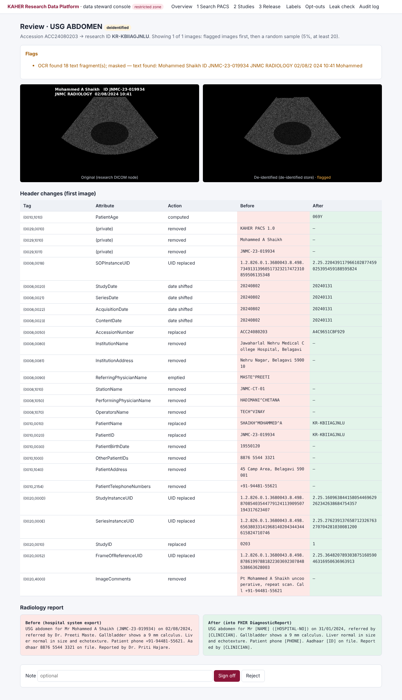

KAHER Research Data Platform: laptop demo
A runnable version of the data pipeline in the KAHER Research Data Access Platform proposal and the KLE Tech Technology Build Plan (17 Nov 2026). It runs on one laptop with Docker, using synthetic patients only.
KAHER restricted zone KAHER de-identified zone KLE Tech
┌───────────────────────────────────────┐ ┌────────────────────────┐ ┌──────────────────────┐
│ Clinical PACS (Orthanc, "JNMC_PACS") │ │ De-identified store │ │ Research server │
│ │ C-FIND / C-MOVE │ │ (Orthanc) │ │ (Orthanc + OHIF) │
│ ▼ │ │ FHIR bundles │ │ ▲ │
│ Research DICOM node (Orthanc) │ ──► │ (+ HAPI FHIR, optional)│ │ Receiver: verify, │
│ │ │ └────────────────────────┘ │ decrypt, load │
│ ▼ │ │ └──────────▲───────────┘
│ Data steward console ── Linking key │ steward review + sign-off │
│ header / pixel / text de-id service │ │ encrypted package (AES-256-GCM)
└───────────────────────────────────────┘ └─────── over the "VPN" ────────┘
labels return the same way ◄──

What each part does
| Proposal / build plan component | In this repo | Tool |
|---|---|---|
| JNMC PACS | pacs container, preloaded with synthetic studies |
Orthanc |
| Research DICOM node (read-only research connection) | research-node; pulls studies from the PACS with standard DICOM C-FIND / C-MOVE |
Orthanc |
| Linking key service | linkkey; HMAC-SHA256 research IDs (KR-…) plus a random per-patient date shift, SQLite, token-protected, no published port |
FastAPI |
| Image de-identification (DICOM PS3.15) | pipeline/krdp/deid_dicom.py: Basic Profile + Retain Longitudinal (shifted dates) + Clean Descriptors + Retain Patient Characteristics; removes all private tags, every person-name element, overlays; keyed deterministic UIDs |
pydicom |
| Burned-in text removal | deid_pixels.py: known-layout masks per modality and OCR on every US/CR/DX/SC/OT image, whether or not BurnedInAnnotation is set; head CT/MR flagged for defacing review |
Tesseract |
| Free-text de-identification | deid_text.py: Presidio + spaCy, plus Indian phone, Aadhaar, hospital-number, "Dr. Name" and PIN-code recognisers, plus a per-patient deny list; dates in text shifted |
Microsoft Presidio |
| Clinical data store | Reports and lab values from a hospital-system export become de-identified FHIR R4 bundles (Patient with research ID and age band, ImagingStudy, DiagnosticReport, Observation with LOINC, Condition with ICD-10) | FHIR R4, optional HAPI FHIR |
| De-identified image store | deid-store |
Orthanc |
| Data steward console | Search PACS → retrieve → de-identify → side-by-side review (flagged images first, then a 5% / at-least-20 sample) → sign off → release; opt-out list; audit log; leak check | FastAPI web app, port 8000 |
| Release packager | Encrypted .krdp package: tar of DICOM + FHIR + manifest with SHA-256 for every file; sidecar checksum for the transfer |
AES-256-GCM |
| VPN / SFTP | A shared Docker volume transfer stands in for SFTP over WireGuard |
– |
| KLE Tech research server | research-server (project image store, with OHIF and Stone viewers) and receiver (verifies, decrypts, loads, sends a receipt back) |
Orthanc |
| Label return | Files in /projects/<project>/labels/ are packaged, encrypted and imported back into the KAHER repository |
– |
| Phase 0 gate: "every planted identifier is removed" | leakcheck.py: searches all headers, OCRs all pixels and searches all FHIR text for the 40 planted identifiers |
– |
Run it on your laptop
You need: Docker Desktop (Windows, macOS or Linux, with at least 6 GB of memory allowed), Git, and Python 3.8 or later (only to create the secrets file).
git clone https://github.com/chickerursr/kaher-research-data-platform.git
cd kaher-research-data-platform
python scripts/init_env.py # writes .env with random keys (never commit it)
docker compose up --build
The first build downloads Orthanc and Python images and the spaCy model (about 1.5 GB in total). It takes 5 to 10 minutes; later starts take seconds. When the log shows loaded 30 DICOM files into the clinical PACS, open http://localhost:8000.
iPad only, no laptop: GitHub Codespaces
Codespaces runs the whole demo on a GitHub cloud machine; you use it from Safari.
- On the iPad, open github.com/chickerursr/kaher-research-data-platform in Safari and sign in.
- Tap Code → Codespaces → ⋯ → New with options, choose 4-core machine, then Create codespace.
- Wait. The first start builds everything (about 10 minutes); the terminal shows
tail -f /tmp/compose-up.logto watch it. - Open the Ports tab and tap the globe icon next to Data steward console (8000). The viewer links in the console open the Orthanc servers through the same Codespaces addresses.
For later demos, reopen the same codespace from Code → Codespaces; it starts in about a minute with your data intact.
- Ports are private: only your signed-in GitHub account can open them. Do not change them to public.
- Free personal accounts include 120 core-hours a month, which is about 30 hours on the 4-core machine. The codespace stops itself after 30 minutes idle; stop it yourself after a demo (Code → Codespaces → ⋯ → Stop) and delete it when no longer needed, since stored codespaces count against the 15 GB storage allowance.
- Tip: add the console page to the iPad home screen (Share → Add to Home Screen) for a one-tap start during a meeting, once the codespace is running.
Showing it on an iPad with the laptop on the same Wi-Fi
Docker cannot run on an iPad, so the laptop runs everything and the iPad opens it in Safari over Wi-Fi.
python scripts/init_env.py --lan # detects the laptop's Wi-Fi address, keeps your secrets
docker compose up -d # restart so the new setting takes effect
The script prints the address to open on the iPad, for example http://192.168.1.20:8000. The Viewers links in the console point to the laptop too, so the PACS and OHIF viewers also open on the iPad.
- Laptop and iPad must be on the same Wi-Fi. Venue and guest Wi-Fi often stop devices reaching each other; your phone's hotspot or a pocket router is the reliable option for meetings.
- The first time, allow Docker through the firewall (Windows: Allow access on the prompt; macOS: System Settings → Network → Firewall).
- In LAN mode the Orthanc servers have no login, so anyone on that Wi-Fi can open them. That is acceptable only because the data is synthetic. Switch back afterwards with
python scripts/init_env.py --localanddocker compose up -d. - To screen-share instead, open http://localhost:8000 on the laptop and use AirPlay or the projector.
Demo walkthrough (about 5 minutes)
- Opt-outs: add
JNMC-24-011209(Sunita Desai) to show that an opted-out patient is never retrieved. - 1 Search PACS: click Search with empty fields to list the four studies, then Retrieve all. This is a real DICOM C-MOVE from the PACS to the research node.
- 2 Studies: click De-identify all retrieved studies. Takes about 30 seconds.
- Click Review on the USG abdomen and on the chest X-ray. You see the original and de-identified images side by side (the name burned into the pixels is gone), every header change, and the report before and after. Click Sign off for each study.
- Leak check: Run leak check should say PASSED.
- 3 Release: enter a project name and click Build and send package. Refresh after a few seconds: the receipt from KLE Tech shows the checksums were verified and the images were loaded.
- Open the KLE Tech research server at http://localhost:8045. It holds only de-identified studies; open one in the OHIF or Stone viewer.
- Audit log: every step is recorded.
To return labels from KLE Tech:
docker compose exec receiver sh -c 'echo "{\"label\":\"calculus\",\"made_by\":\"dr-demo\"}" > /projects/<project>/labels/case1.json'
docker compose exec receiver python -m krdp.receiver return-labels <project>
Then open Labels in the console and click Import.
Viewers
| URL | What | Zone |
|---|---|---|
| http://localhost:8000 | Data steward console | restricted |
| http://localhost:8042/ui/app/ | Clinical PACS (identifiable) | restricted |
| http://localhost:8043/ui/app/ | Research DICOM node (identifiable) | restricted |
| http://localhost:8044/ui/app/ | De-identified store | de-identified |
| http://localhost:8045/ui/app/ | KLE Tech research server | KLE Tech |
All ports are bound to 127.0.0.1, so nothing is reachable from your network.
Useful commands
docker compose exec steward python -m krdp.leakcheck # leak check from the command line
docker compose --profile fhir up -d # also start HAPI FHIR (set FHIR_URL in .env first)
docker compose down # stop
docker compose down -v # stop and delete all data (fresh start)
Tests without Docker
The tests run the whole pipeline: search, C-MOVE, de-identification, leak check, sign-off, release, receipt, tamper detection and label return. They use an in-memory stand-in for the Orthanc REST API.
pip install -r pipeline/requirements.txt pytest
sudo apt install tesseract-ocr # or: brew install tesseract
pytest -q tests
Sample data
pipeline/krdp/synth.py creates four invented patients with identifiers planted wherever real data hides them:
- CT head, 16 slices. Includes a "face" region in the low slices, so the image gets flagged for defacing.
- Chest X-ray with the name and hospital number burned into the image.
- Ultrasound with a name bar burned into the image and no BurnedInAnnotation flag, which is common with real devices.
- CT chest, 12 slices.
- In every file: name, hospital number, birth date, address, phone, Aadhaar-style number, accession number, referring and performing clinicians, institution, a free-text image comment naming the patient, and a private vendor tag holding the name.
- A hospital-system export with radiology reports (names, phones, addresses, clinicians) and lab values.
To try real public data, load studies from The Cancer Imaging Archive into the PACS at http://localhost:8042 (Upload) and add them to the HIS export.
Limits of this demo (to do before real patient data)
These are deliberate simplifications. Each maps to an item in the build plan.
- Defacing: head CT/MR is only flagged for review. Add a real defacing tool (for example
mri_refaceorpydeface) in phase 1. - Keys: one shared AES key and one
.env. Use per-project keys or public-key encryption (age/GPG), and keep secrets in a vault. - Network: the shared volume stands in for the WireGuard VPN plus SFTP, and Docker networks stand in for the separate network segments.
- Login: there is none; ports are bound to localhost only. Add Keycloak with two-factor login, per-project groups and the monthly user list.
- Annotation: the research server has the OHIF viewer, but not MONAI Label, Label Studio, JupyterHub work areas, MLflow or central logging.
- Clinical data: comes from a JSON export. Real HIS/LIS/RIS extraction depends on the vendor answers in section 10 of the build plan.
- Hospital numbers: the format is a guess (
JNMC-24-004512). SetHOSPITAL_NUMBER_REGEXonce KAHER IT confirms the real format. - Linking key: kept indefinitely, in plain SQLite. The proposal leaves the decision on keeping it to the IEC. Production needs an encrypted database on a separate machine.
- OCR and NER catch most identifiers, not all, which is why manual review of every release stays mandatory.
Repository layout
docker-compose.yml all services, networks and volumes
scripts/init_env.py creates .env with random secrets
pipeline/Dockerfile one image for steward, linkkey, seed and receiver
pipeline/krdp/
synth.py, seed.py synthetic data and PACS loading
orthanc.py Orthanc REST client (C-FIND / C-MOVE via the research node)
linkkey.py linking key service + client
deid_dicom.py header de-identification (PS3.15)
deid_pixels.py burned-in text masking (layout masks + OCR)
deid_text.py free-text de-identification (Presidio)
fhir.py de-identified FHIR R4 bundles
pipeline.py search → retrieve → de-identify → review → release
release.py encrypted package format
receiver.py KLE Tech receiver and label return
leakcheck.py planted-identifier leak check
state.py steward database (audit, opt-outs, studies, releases)
steward/ data steward console (FastAPI + templates)
tests/ end-to-end test with an in-memory Orthanc
Licence
Released under the PolyForm Noncommercial License 1.0.0.
- Free for any noncommercial purpose: teaching, learning, research and personal study. This covers use by any educational institution, public research organisation, or public health or government body, which may also copy and adapt it.
- Commercial use (for example including it in a paid product or service) needs written permission from the author. Please get in touch through this repository.
Required Notice: Copyright (c) 2026 Satyadhyan Chickerur (https://github.com/chickerursr/kaher-research-data-platform)
The open-source tools this demo runs (Orthanc, OHIF, pydicom, Presidio, spaCy, Tesseract, FastAPI and others) keep their own licences; the licence above covers this project's own code and content.
Prepared for the KAHER–KLE Tech joint projects (CAIR, KLE Technological University). Synthetic data only: do not load real patient data until the IEC has approved the repository protocol and the security review in phase 1 has been passed.